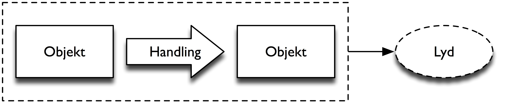
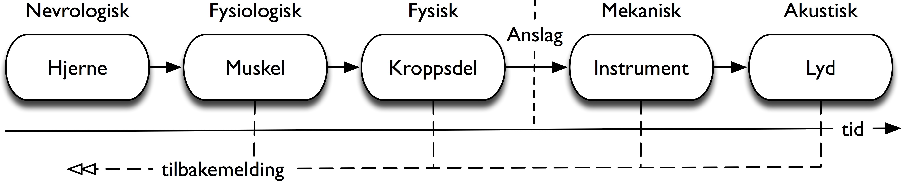
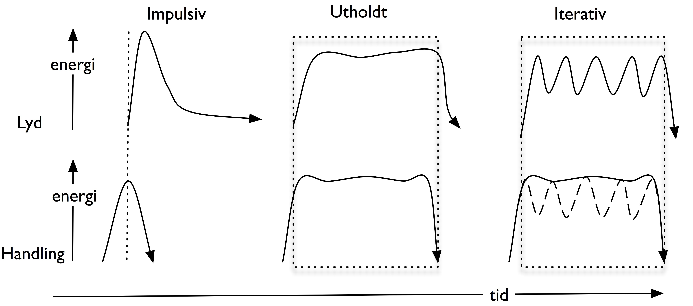
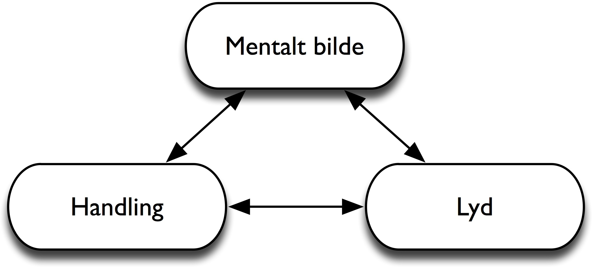
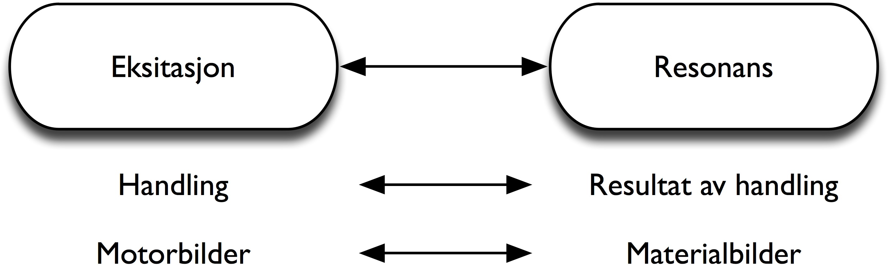
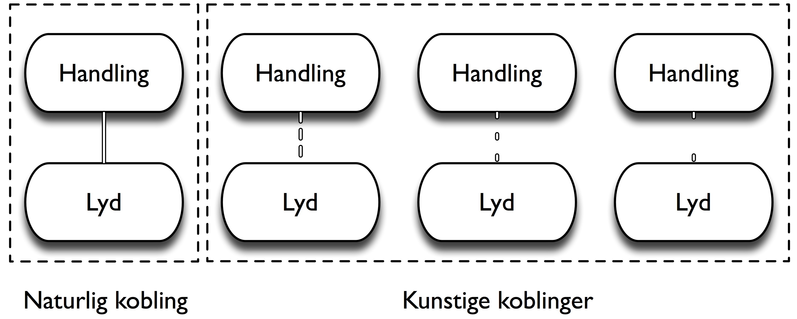

7. Koblinger mellom handling og lyd#
I dette kapitlet skal vi se nærmere på forskjellige typer koblinger mellom handling og lyd. Det blir beskrevet hvordan slike koblinger er bygget opp og hvordan de påvirker måten vi opplever musikk på.
Et glass som faller#
Tenk på en hånd som holder et vannglass, og som deretter slipper glasset slik at det faller mot gulvet. Mens det fremdeles er i luften, vil du kunne forestille deg både det visuelle og lydlige resultatet når glasset treffer gulvet og knuser. Siden du vet at lyden som kommer, kan være ubehagelig, forsøker du kanskje å dekke ørene for å beskytte hørselen. Denne intuitive forståelsen av sammenhengen mellom objekter, handlinger som utføres med objektene, og lyden som oppstår av handlingen, er basert på det vi kan kalle en kobling mellom handling og lyd. Vi kan skille mellom to hovedtyper av slike koblinger:
En naturlig handling–lyd-kobling er basert på en mekanisk overføring av energi mellom objekter. Slike koblinger finner man i naturen.
En kunstig handling–lyd-kobling er basert på en elektronisk overføring av tall fra en sensor til en lydenhet. Slike koblinger finner man i elektroniske instrumenter, datamaskiner, osv.
Disse definisjonene beskriver oppbygningen av en kobling og ikke vår oppfattelse av resultatet av koblingen. Vi kan forklare forskjellen mellom en naturlig og en kunstig kobling ved å sammenligne et digitalt og et akustisk piano. I et akustisk piano finner man en naturlig kobling, ettersom lyden skapes ved hjelp av et mekanisk system der man slår an en tangent, og energien overføres videre til en hammer som slår an en streng. I et digitalt piano er det derimot ingen direkte energioverføring mellom handling og lyd. Energien som skapes når man slår ned tangenten, registreres av en sensor som sender digital informasjon videre til en lydenhet som produserer lyden.
Selv om opplevelsen av en kobling på et digitalt piano kan oppleves som naturlig, vil den allikevel skille seg fra koblingen man finner i et akustisk instrument. En kunstig kobling vil aldri kunne være så sterk som en naturlig kobling, hverken fysisk eller perseptuelt. Uansett hvor bra et digitalt piano er konstruert, og uansett hvor naturlig det måtte høres ut, så vil koblingen brytes i det øyeblikket strømmen til instrumentet kuttes. Et akustisk piano derimot vil alltid gi en eller annen form for respons. Man får til og med en fysisk og lydlig tilbakemelding fra instrumentet selv om strengen man spiller på har røket. Denne grunnleggende forskjellen mellom naturlige og kunstige koblinger vil stå sentralt i resten av diskusjonen i dette kapitlet.
Naturlige koblinger#
Grunnlaget for en naturlig kobling mellom handling og lyd er at det må være minst to objekter og én lydproduserende handling involvert, slik som det er skissert i figur 52. Et objekt brukes her for å beskrive alle fysiske objekter som kan brukes til lydproduksjon. Dette kan være for eksempel en hånd, et vannglass, en trommestikke, eller en pianohammer. I en naturlig sammenheng er det de materielle egenskapene til objektene, og de mekaniske eller biomekaniske egenskapene til handlingene, som er grunnlaget for lyden som produseres. Gjennom vår erfaring med forskjellige objekter og handlinger har vi bygget opp en forståelse for slike akustiske og mekaniske egenskaper. Det er denne forståelsen som ligger til grunn for vår evne til å forestille oss det klingende resultatet av en lydproduserende handling.

En viktig del av den økologiske psykologien til Gibson (som beskrevet i kapittel 1) er basert på at et objekt har egenskaper som muliggjør en bestemt type handling med objektet. Gibson (1977) brukte begrepet affordance om dette på engelsk. På norsk kan dette begrepet oversettes til oppfordringsegenskaper (Helstrup og Kaufmann 2000). Ofte holder det med å se på et objekt for å forstå hvordan objektet skal brukes. Hvis man for eksempel ser en krakk, vil det være naturlig å tenke at man kan sitte på den. ”Å sitte” vil dermed være en av oppfordringsegenskapene til krakken.
Ettersom det er en så tett kobling mellom handling og lyd, er det mulig å argumentere for at et objekt også har lydlige oppfordringsegenskaper. Hvis vi går tilbake til eksemplet med glasset som slippes mot gulvet, så vil denne handlingen alltid lede til lyden av glass som treffer bakken. En slik handling vil aldri resultere i lyden av en ringeklokkelyd. Dette er fordi et slikt lydlig resultat ligger klart utenfor forventede koblinger mellom handling og lyd. Resultatet ville bli at vi måtte lete etter andre forklaringer på hvor lyden kom fra, for eksempel at noen ringte på døren. Digital teknologi har derimot åpnet for at vi kan skape mange flere lydlige resultater, siden det ikke er noen mekaniske og akustiske begrensninger knyttet til objektene og handlingene som er i bruk. Dette gjør at kunstige koblinger mellom handling og lyd skiller seg tydelig fra de naturlige koblingene.
I Gibsons teori ligger også muligheten for at et objekt kan oppfordre til flere forskjellige handlinger. En krakk kan brukes til å sitte på, men den kan også brukes som bord ved behov. På samme måte kan vi si at objekter kan tilby flere lydlige resultater. Vi vil anta at glasset knuser når det treffer gulvet. Hvis glasset derimot er laget av plast, er det naturlig at det bare vil ”sprette”. At et glass spretter istedenfor å knuse ville være overraskende, men det ville allikevel ligge innenfor rammene av det vi kan forvente av et glass. Vår forståelse av objektene vi omgir oss med er ofte omtrentlige, så det er mulig å snakke om en palett av forskjellige koblinger mellom handling og lyd. En slik palett har tydelige grenser som definerer hvilke typer lyder vi kan forvente oss når det handles med bestemte objekter.
For å forstå mer av hvordan vi oppfatter naturlige koblinger, må vi først se nærmere på deres konstruksjon og produksjon. Figur 53 viser en skjematisk oversikt over utførelsen av en lydproduserende handling, for eksempel å slå på en tromme med hånden. Dette forløpet begynner med nevral aktivitet i hjernen etterfulgt av fysiologisk aktivitet i en serie med muskler. Dette leder videre til biomekanisk aktivitet i de involverte kroppsdelene (for eksempel arm og hånd) etterfulgt av selve anslaget når hånden treffer trommeskinnet. Når trommeskinnet eksiteres, begynner det å vibrere, og lyden skapes.

Legg merke til at det fra alle nivåer i forløpet skissert i figur 53 er tilbakemelding til brukeren. Denne tilbakemeldingen kan ses på som del av det Gibson (1979) kalte en aktiv kognisjonsprosess. Tanken her er at vi hele tiden bruker sansene våre for å korrigere handlingene vi utfører. Et eksempel på dette fra musikalsk utøvelse er hvordan det ofte er nødvendig å gjøre små justeringer i anslaget for å kunne tilpasse seg til varierende mikrodetaljer. Her er det tilbakemeldingen fra de forskjellige nivåene i forløpet som hjelper oss å korrigere handlingen.
I kapittel 2 så vi på en modell for hvordan en handling er bygget opp av en eksitasjon med et prefiks og et suffiks (figur 5). Prefikset er den delen av anslaget som skjer før eksitasjonen, mens suffikset er returen tilbake til baseposisjon eller en overgang til neste prefiks. Godøy (2009) argumenterer for at prefikset og suffikset spiller en viktig rolle i både utøving og sansning av en lydproduserende handling. Prefikset er med på å skape en forventning om hva som kommer til å skje i eksitasjonsøyeblikket. Tilsvarende vil vi i eksitasjonsøyeblikket sette opp en forventning om hvordan suffikset vil forløpe, samt se begynnelsen av et nytt prefiks. For eksempel, når vi ser en perkusjonist løfte en paukekølle, vil vi forvente at det snart kommer en kraftig lyd. Vi vil også forvente at energinivået i suffikset skal tilsvare energinivået i prefikset samt det klingende resultatet. På den måten kan vi si at både prefikset og suffikset hjelper oss med å justere vår persepsjon av lyden
Med utgangspunkt i de tre forskjellige handlingstypene som ble beskrevet i kapittel 2, kan vi definere tre likelydende handling–lyd-typer: impulsiv, utholdt og iterativ (Godøy 2006). En skjematisk oversikt over disse tre typene er vist i figur 54. Den stiplete linjen indikerer hvor eksitasjonen skjer, og viser at lyden alltid oppstår litt etter at handlingen er påbegynt. Dette er fordi det kreves noe energitilførsel for at det klingende objektet skal begynne å resonnere. Tilsvarende er det vanlig at lyden varer lenger enn eksitasjonshandlingen, på grunn av resonans og klang i instrument og rom.

Impulsive handlinger er basert på en diskontinuerlig energioverførsel, og den etterfølgende lyden resulterer også i et raskt lydlig anslag etterfulgt av en utdøende resonans. Impulsive koblinger er vanlige i perkusjons- og tangentinstrumenter samt på strengeinstrumenter som spilles med fingrene. De utholdte koblingene er basert på en lang eksitasjonsfase der det er en kontinuerlig energioverførsel mellom de involverte objektene. Her skapes det lyd gjennom store deler av eksitasjonsfasen. Dette er vanlig i de fleste stryke- og blåseinstrumenter.
Iterative koblinger er en kombinasjon av de to foregående typene. Eksempler på iterative koblinger finner man i perkusjonsinstrumenter som guiro, cabasa og klokkespill. Her er eksitasjonen basert på en utholdt handling, men instrumentet er konstruert slik at denne handlingen leder til en serie av korte og impulsive anslag. Det er også mulig å observere slike iterative koblinger i andre sammenhenger, for eksempel ved raske håndbevegelser i gitarspill, eller en trille på et piano.
Meningen med en klassifikasjon av forskjellige koblinger mellom bevegelse og lyd er ikke å gruppere instrumenter, men snarere ha en modell for å forstå hvordan vi oppfatter forskjellige lydkvaliteter med utgangspunkt i de lydproduserende handlingene. Det finnes derfor mange eksempler på instrumenter som dekker alle de tre typene. På fiolin kan man spille impulsiv pizzicato, utholdt legato og iterativ tremolo. At disse tre spilleteknikkene kan identifiseres fra det lydlige resultatet, noe som vitner om at vi har en klar forståelse av koblingen mellom handling og lyd.
Persepsjon av handling–lyd-koblinger#
Ikke bare er vi mennesker flinke til å raskt identifisere naturlige lyder som kommer fra forskjellige objekter og handlinger, men vi kan også assosiere forskjellige kvaliteter til lydene vi hører (Gaver 1993a, 1993b). I eksemplet med glasset som faller i gulvet, kan lyden i seg selv gi oss informasjon om alt fra hvilket materiale glasset er laget av, underlaget det traff, avstanden det falt, om det ble kastet eller sluppet osv. Når det gjelder menneskestemmer har den svenske psykologen Patrik Juslin funnet at lyden av stemmen er nok til at vi kan si noe om en persons kjønn, alder, oppvekststed, sosial status og helse (Juslin og Scherer 2005). Det at vi er i stand til å identifisere egenskaper basert på lyd, gjelder ikke bare når vi lytter aktivt til en lyd, men også når vi registrerer lyder i hverdagen (Rocchesso og Fontana 2003). Fra et økologisk perspektiv er dette viktig læring, ettersom evnen til å gjenkjenne og identifisere lydkilder er viktig for vår overlevelsesevne.
I tillegg til at vi kan identifisere egenskapene til objekter og handlinger fra lyd, er vi også ut fra erfaring dyktige til å forestille oss hvordan en lyd vil høres ut bare ved å se objekter og handlinger. For å forklare slik multimodal sansning av handling og lyd, foreslo Godøy (1997) en modell som viser hvordan handling, lyd og våre mentale bilder av både handling og lyd er knyttet sammen (figur 55). Bruken av begrepet mentalt bilde refererer her til en opplevelse som minner om en perseptuell opplevelse, men uten et eksternt sanseinntrykk. Slike mentale bilder er multimodale, og er ikke bare knyttet til én sans slik ordet kan henlede en til å tro. Snarere kan mentale bilder ses på som et begrep som forklarer evnen til å ”se gjennom det indre øyet” eller ”lytte i hodet”.

I Godøys modell kan lytting forstås som en kontinuerlig og multimodal prosess der den musikalske lyden blir kodet om til multimodale bilder av handling–lyd-koblinger (Godøy 2006). Ideen er ikke at vi ser et objekt, for eksempel en fiolin, når vi hører fiolinlyd, men snarere at vi får en fornemmelse av objektene og handlingene som er involvert i produksjonen av lyden. Legg merke til at det er en toveis kommunikasjon i modellen, noe som betyr at de mentale bildene av handling–lyd-koblinger ikke bare er resultatet av å lytte til den musikalske lyden, men at de også er aktive i selve lytteprosessen.
Godøy (2001) har videre foreslått at våre mentale bilder av handling–lyd-koblinger kan deles i motorbilder og materialbilder (figur 56). Her er motorbildene en mental fremstilling av eksitasjonen i den lydproduserende handlingen, mens materialbilder er en fremstilling av resonansen som oppstår som resultat av handlingen. Til sammen dekker motorbilder og materialbilder kvaliteter i både lydproduserende handling og objekt.

Godøys modeller av koblinger mellom handling og lyd bygger på det som kalles motorteorier om talepersepsjon. I disse teoriene forsøker man å forklare hvordan vi oppfatter tale ved hele tiden å simulere det vi hører i vokaltrakten (Liberman og Mattingly 1985). Disse motorteoriene møtte stor motstand opp gjennom årene, men fikk fornyet interesse etter at gruppen til den italienske hjerneforskeren Vittorio Gallese fant et område i hjernen med det de kaller speilnevroner (Gallese et al. 1996). Dette ble funnet gjennom studier på aper, og forskerne fant at et bestemt sett nevroner i hjernen ble aktivert både når en ape utførte en målrettet handling, og når den observerte en tilsvarende handling bli utført av en annen ape.
Det virker med andre ord som om vi mentalt ”simulerer” handlingene vi ser, noe som kan forklare hvordan vi kan lære bare ved å observere andre utføre en handling. Slike speilnevroner kan også forklare vår evne til å forutse hva som kommer til å skje når vi ser begynnelsen av en handlingssekvens, ettersom vi mentalt simulerer handlingen og dermed kan forestille oss det forventede utfallet. Wilson og Knoblich (2005) argumenterer for at en lignende simulering pågår parallelt med at vi utfører egne handlinger. Denne mentale simuleringen brukes for å hjelpe oss til å justere våre handlinger underveis i forløpet.
I det videre arbeidet med speilnevroner, har forskningsgruppen til Gallese også funnet det de kaller audiovisuelle speilnevroner i hjernen hos aper. Her fant de at disse speilnevronene ble aktivert enten apen bare hørte lyden, bare så handlingen, eller både hørte lyden og så den lydproduserende handlingen (Kohler et al. 2002; Keysers et al. 2003). Dette støtter dermed teorien om at det er en tett kobling mellom handling og lyd.
De ovennevnte eksperimentene ble utført på aper, men det er også studier som har vist tilsvarende motorområder i menneskehjernen. Ved hjelp av en medisinsk bildeteknikk som kalles positronemisjonstomografi (PET), fant Rizzolatti og Arbib (1998) at speilnevroner ble aktivert under talepersepsjon. Det har også blitt vist at hjerneaktiviteten hos forsøkspersoner var lik når de bare lyttet til tale eller musikk, og når de også nynnet til musikken (Hickok et al. 2003).
Noen av de tidlige studiene av audiovisuelle speilnevroner ble kritisert for bare å fokusere på korte, hverdagslige lyder som klapping eller banking. Men det har også vært studier av mer komplekst lydmateriale. Haueisen og Knösche (2001) brukte en teknikk som heter magnetoencefalografi (MEG) for å måle hjerneaktivitet og fant at pianister viste ufrivillig motoraktivitet når de lyttet til stykker som de kjente godt. Med andre ord ”spilte” pianistene stykket i hodet mens de lyttet.
En nyere studie viser en lignende type ufrivillig motoraktivitet også hos ikke-musikere (Lahav et al. 2007). Eksperimentet begynte med at ikke-musikere øvde inn en melodi på piano etter gehør. Etter dette viste funksjonell magnetresonanstomografi (fMRI) at motorområder i hjernen ble aktivert når personene lyttet til den melodien de hadde øvd inn, selv om de satt helt stille. Denne aktiveringen skjedde bare når de lyttet til den samme melodien som de hadde øvet inn; variasjoner av melodien resulterte i lite eller ingen aktivering. En stadig økende grad av nevrovitenskapelige undersøkelser støtter opp under ideen om at koblinger mellom handling og lyd ikke bare er en teoretisk mulighet, men snarere en integrert del av vårt kognisjonsapparat.
Kunstige handling–lyd-koblinger#
Naturlige koblinger mellom handling og lyd er basert på de mekaniske og akustiske egenskapene til objektene og handlingene som er involvert. Men vi omgir oss i økende grad også med en rekke kunstige handling–lyd-koblinger som er designet og laget elektronisk. Vi kan skille mellom tre forskjellige hovedtyper av slike kunstige koblinger:
direkte
indirekte
virtuelle
De direkte koblingene inkluderer alt fra ringeklokker til mobiltelefoner og elektroniske musikkinstrumenter. I slike enheter blir lyden produsert elektronisk og kommer ut gjennom en høyttaler i eller i nærheten av enheten. Interaksjonen med enheten skjer gjerne gjennom en form for mekanisk kontrollenhet, slik som en knapp, bryter eller joystick.
Indirekte koblinger finner man på datamaskiner og i dataspill. Her bruker man gjerne en fysisk kontroller til interaksjon, men denne kontrolleren er ofte løsrevet fra interaksjonen man gjør på skjermen. Et eksempel på dette er når man bruker en joystick til å styre et bilratt på skjermen. Her vil bevegelsene man gjør med joysticken være annerledes enn det man ville gjort med et bilratt. Interaksjonen fungerer allikevel ettersom vi lærer å tilpasse de fysiske bevegelsene vi gjør til de animerte bevegelsene vi ser på skjermen. Selv om mange dataspill benytter generelle kontrollere (joystick, gamepad, osv.), finnes det også en del spesialdesignede kontrollere der det er en tilnærmet en-til-en-relasjon mellom den fysiske og den virtuelle verden. Eksempler på dette er bilratt og pedaler, flykontroller, pistoler, gitarer, osv.
Virtuelle koblinger finner man i film og på TV. Her utfører vi ikke selv en handling, men vi observerer handlinger som skjer i et annet medium. Disse koblingene skiller seg allikevel fra naturlige koblinger som vi observerer i den virkelige verden, ettersom vi ikke kan være sikre på hvor stabil koblingen er når den er gjengitt gjennom et medium som en TV-skjerm. Asynkront bilde og lyd i en TV-sending viser hvordan en slik virtuell kobling skiller seg fra en naturlig. Andre eksempler kan være hvordan kunstige lydeffekter legges på for å skape en ny kobling mellom handling og lyd.
Som nevnt tidligere er vår persepsjon av naturlige koblinger styrt av vår kunnskap om, og erfaring med, de materielle egenskapene til de involverte objektene og de mekaniske egenskapene til handlingene som utføres. Dette er kunnskap som kontinuerlig utvikles i vårt møte med nye objekter og handlinger. Tilsvarende kan vi si at vår kunnskap om kunstige koblinger kontinuerlig oppdateres, ettersom vi omgir oss med stadig mer teknologi. Allikevel kan det argumenteres for at slike kunstige koblinger aldri vil kunne oppleves som like sterke som de naturlige koblingene. Den viktigste grunnen er at vi ikke kan stole på stabiliteten til den kunstige koblingen. Tenk for eksempel på en elektronisk ringeklokke. Den direkte kunstige koblingen i ringeklokken virker intuitiv og sterk ettersom man alltid får en umiddelbar respons når man trykker på knappen. Men uansett hvor mange ganger ringeklokken har virket, kan man aldri være sikker på at den kommer til å fungere neste gang. Uten elektrisitet kommer det ingen lyd når man trykker på knappen. Ettersom vi har lært oss at det er en kunstig kobling i ringeklokken, vil ikke dette føles som et brudd mot naturlovene, vi vil snarere tenke på forskjellige forklaringer på hvorfor det ikke kommer lyd. Én grunn kan være at strømmen har gått, en annen kan være at en del av mekanismen har sluttet å fungere. Vi vil bli overrasket, men ikke på samme måte som hvis det ikke kommer lyd når man mister et glass i gulvet.
Som nevnt over kan vi snakke om en palett av mulige koblinger mellom handling og lyd i en enhet. For naturlige koblinger er disse mulighetene begrenset av de akustiske egenskapene til objektene og de mekaniske egenskapene til handlingene som er involvert. Et glass som knuser, vil være begrenset av materialet, størrelsen og formen til glasset, samt høyden det falt fra. Disse parametrene kan variere noe, men antallet mulige koblinger er allikevel begrenset. Paletten til kunstige koblinger er derimot tilnærmet uendelig. Før vi trykker på en dørklokke, har vi ingen mulighet til å forutsi om lyden som kommer, vil være ”ding dong”, ”pip”, ”brrrrr” eller en kort melodi. Dette er rett og slett fordi vi vet at det er snakk om en kunstig kobling, og vi har lært oss til at de kan variere mye. Vi vil kanskje forvente et ”ding dong”, men vi blir ikke overrasket hvis det spilles en melodi. På den måten kan vi si at en melodi oppleves som perseptuelt svakere enn det ”ding dong” ville ha gjort. Kunstige koblinger kan derfor variere fra å være perseptuelt sterke til å være perseptuelt svake, slik som skissert i figur 57.

I musikalsk sammenheng ser vi at konstruksjon av nye handling–lyd-koblinger, både naturlige og kunstige, er en viktig del av den kreative prosessen hos komponister og utøvere. Musikkhistorien er full av eksempler på hvordan nye koblinger kan lede til spennende musikalske uttrykk. Dette har vært gjort ved å utvikle nye instrumenter, både akustiske og elektroniske. Det har også vært gjort ved å utvide klangmulighetene på de eksisterende instrumentene. Én måte å gjøre dette på er ved preparere et instrument med forskjellige mekaniske deler slik som mynter, binderser, stålull osv. En annen er å bruke forskjellige effektpedaler eller en datamaskin for å forandre lyden som spilles.
I noen tilfeller kan slike utvidelser av handling–lyd-koblinger bli så vanlige at de regnes som en standardisert del av et instrument. Det er for eksempel vanskelig å forestille seg en rockegitarist uten forskjellige effektpedaler. I den senere tiden har det også blitt vanlig at datamaskiner overtar en del av funksjonene som separate bokser har hatt tidligere, samt åpner for mer avansert lydbehandling. Slike nye koblinger mellom handling og lyd kan i noen tilfeller fungere godt, men ikke alltid. Eksempler på dette er digitale musikkinstrumenter der koblingen mellom kontroller og lydenhet er svak. I dag ser man ofte at pianolignende kontrollere brukes til å styre alle former for elektronisk lyd. Resultatet kan være at koblingen ikke føles naturlig eller spennende hverken for utøver eller for publikum. Det er derfor et stigende behov for et mer bevisst forhold til design av handling–lyd-koblinger, noe vi skal se nærmere på i kapittel 8.
Sammendrag#
I dette kapitlet har vi sett på forskjellen mellom naturlige og kunstige handling–lyd-koblinger. Det lydlige resultatet i en naturlig kobling er basert på de mekaniske egenskapene til handlingen og de akustiske egenskapene til objektene som er involvert. Vår livslange erfaring med naturlige koblinger danner grunnlaget for vår evne til å forestille oss lyden av en handling vi bare ser, eller forestille oss handlingen til en lyd vi bare hører. Dette gjør vi ved hjelp av multimodale mentale bilder som representerer både bevegelse og lyd. En slik teoretisk modell støttes av funnet av audiovisuelle speilnevroner i hjernen. Dette er nevroner som aktiveres når man ser en lydproduserende handling, hører lyden av handlingen eller både ser og hører handlingen. Kunnskap om naturlige koblinger mellom handling og lyd er viktig når man designer kunstige koblinger i elektronikk. Ettersom de kunstige koblingene kan designes fritt, vil koblingens perseptuelle kvalitet være avhengig av hvordan den ligner på, eller bryter med, naturlige koblinger som den minner om.
Les mer#
Lydkildepersepsjon: Giordano (2005)
Koblinger mellom handling og lyd: Godøy og Leman (2009)
Økologisk lytting: Clarke (2005)